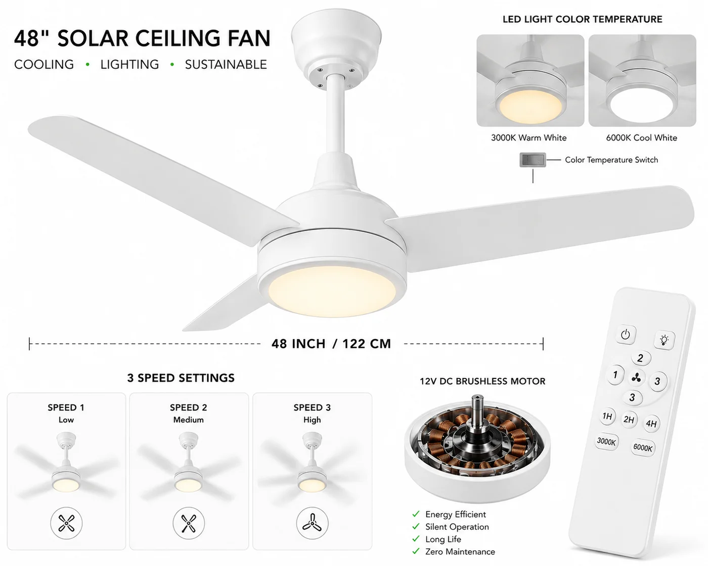

太阳能吊扇灯
带集成 LED 灯、靠太阳能运行的 48 寸 DC 吊扇——3 档静音<35dB,900 流明可切换光,6000mAh 磷酸铁锂电池,遥控操作。

在电力不稳的炎热气候里,风扇不是奢侈品——而这款 SKU 把舒适带到离网场景。12V 直流无刷电机以三档静音(低于 35dB)驱动 48 寸扇叶,集成的 12W LED 提供 900 流明暖白或冷白光。自带 20W 光伏板和 6000mAh 磷酸铁锂电池让它在停电时照常运行,一切由遥控操作。
规格参数
| 电机 | 12V 直流无刷 |
|---|---|
| 档速 | 3 档,<35dB |
| 灯 | 12W LED,900 lm,3000K/6000K |
| 光伏板 | 18V 20W |
| 电池 | 12.8V 6000mAh 磷酸铁锂 |
| 扇叶 | 48 寸 ABS |
| 控制 | 遥控 |
| 认证 | CE + RoHS |
为什么选它
离网的舒适。照明与降温合一——在炎热、易停电市场价值感高。
静音直流电机。低于 35dB、三档,适合卧室与客厅。
自供电。专属光伏板与磷酸铁锂电池让它在停电时照常运行。为什么磷酸铁锂更好 →
已认证、支持 OEM。每份报价附 CE + RoHS;可定制品牌。
为这些市场而建撒哈拉以南非洲、拉美和南亚/东南亚的炎热、离网与易停电家庭——无需电网的舒适。